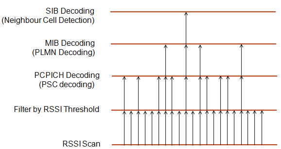
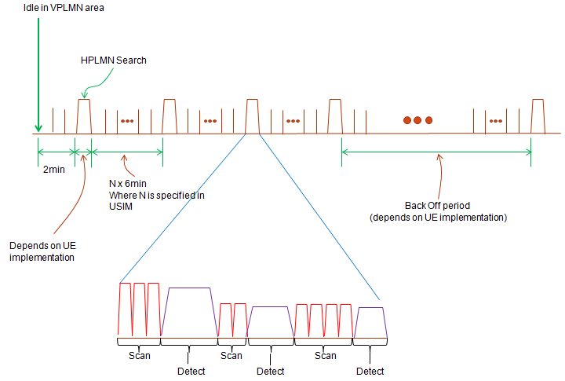
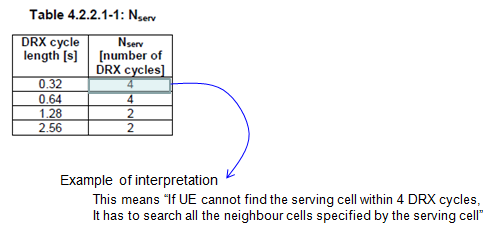
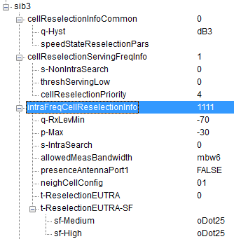
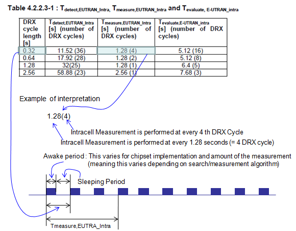
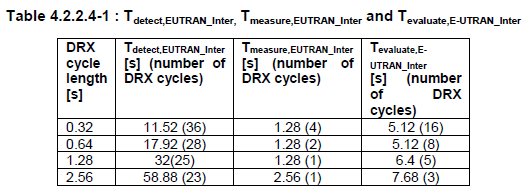
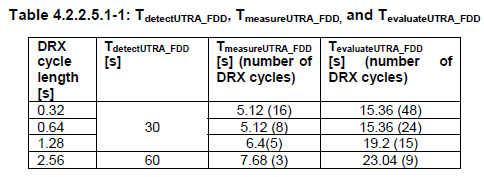
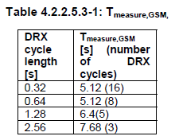

|
Note : See "Idle Mode Procedure" section first for the big picture. (I wrote this section with more focus on LTE, but it is similar logic in UMTS as well).
Cell Search (Measurement, Evaluate, Detect)
"Cell Search" in this page means the collective term representing the combined procedure of Measurement, Evaluation, Detection process.
This is very tightly related to Cell Selection process because UE goes through this search process first before it goes through the cell selection.
Also this process influence greatly on engergy consumption of UE during the idle mode.
Basic Terminology
-
DRX Cycle : This is a kind of clock(Timer). Measurement/Evaluate/Detect process is performed in a specific interval specified in number of DRX cycles. (In Idle mode case, this DRX cycle is determined by network via SIB1)
-
Scan : This term is not frequency used in any specification, but most of UE (I think all the UE) performs this process. This is a process of tuning to a specific frequency and just measuring the simplest signal quality (e.g, RSSI). Usually before Measurement, Evaluation process UE performs the scan first and select 'small number of candidate' to go through next step (e.g, measurement, evaluate). If UE directly goes into the measurement, Evaluation step for all the possible frequency and band, it is too time consuming and more seriously energy consuming.
- Measurement : The process of measuring RSRP, RSRQ (For non-serving cell measurement, this is done according to T_measure_xxxxx cycle in 36.133. Also refer to following section).
- Evaluate : The processing of checking Cell Selection Criteria based on the result of 'Measurement' step(For non-serving cell measurement, this is done according to T_evaluate_xxxxx cycle in 36.133 Also refer to following section).
- Detect : The process of tuning to a specific frequency and going through synchronization process and decoding basic information of the cell (e.g, Physicall Cell ID and basic MIB/SIB information). (For non-serving cell measurement, this is done according to T_detact_xxxxx cycle in 36.133 Also refer to following section).
Overall Sequence of Scan, Measurement, Evaluate, Detect, Select


When these process is performed ?
Overall logic would be as follows :
- i) When UE is turned on
- ii) UE tries to find the serving cell at every DRX cycle during Idle mode
- iii) if UE does not find the serving cell withing a certain number of trials, it would start neighbour cell search (This neighbour cell search can be intra or inter. The interval between these neighbour cell search varies with DRX cycle and intra/inter frequency mode. Normally this search happen with N x DRX and 'N' varies with the situation. Refer to 36.304, 36.133 for the details).
- iv) When UE is in Limited Service (e.g, SOS/Emergency Call only) : UE periodically try to search a suitable cells for normal service.
- v) When UE is in OOC (Out of Coverage) : UE should try to rescan the existing cell to see if it can get back to normal service or try to other cells to see if it get the normal service.
- vii) When UE is in Roaming state (meaning that it is currently camped on to VPLMN cell), it should search HPLMN cell periodically (The period is usually N x 6 min, where N is specified in HPPLMN field in the USIM)
Serving Cell Measurement/Evaluation
UE peforms the measurement for serving cell at every DRX cycle and check if it satisfy the cell selection criteria. If it successfully finds a cell meeting the criteria within a certain amount of trial, it stays at the cell but if it does not find the serving cell within a certain amount of trials (see the table shown below), it should initiate the measurement/evaluation for all the neighbour cells which is specified by the serving cell system information. (Refer to 36.133 section 4.2.2.1 for details)

Intra/Inter Frequency and InterRAT Measurement/Evaluation/Detection
36.304 section 5.2.4.2 (V8.10.0) describes the rule for measurement of non-serving cell as follows (depending on the version of this document, you would see a little bit different parameter name and way of description):
Regarding Intra Frequency Measurement : SIB3 and SIB4 are involved in this process
- If S_intrasearch (SIB3) is sent in the serving cell and S_servingCell (Srxlev) > S_instrasearch, UE may choose to not perform intra-frequency measurement
- If S_servingCell (Srxlev) <= S_instrasearch or S_intrasearch is not sent in the serving cell, UE shall perform intra-frequency measurement. --> This means 'If you omit S_intrasearch IE in SIB3, UE has to perform instra-frequency measurement all the time regardless of Srxlev value.
Regarding Inter Frequency Measurement : SIB3 and SIB5 are involved in this process
Case 1 : When the reselection priority of a neighbour cell is higher than the current cell,
- UE shall perform measurements of higher priority neighbour cell
Case 2 : When the reselection priority of a neighbour cell is equal or lower than the current cell,
- If S_nonintrasearch(SIB3) is sent in the serving cell and S_servingCell(Srxlev) > S_nonintrasearch, UE may choose not to perform the neighbor cell measurement
- If S_servingCell (Srxlev) <= S_noninstrasearch or S_nonintrasearch is not sent in the serving cell, UE shall perform inter-frequency measurement. --> This means 'If you omit S_nonintrasearch IE in SIB3, UE has to perform inter-frequency measurement all the time regardless of Srxlev value. Measurement Interval is defined by 36.133 as shown below.
Regarding Inter RAT UTRA Measurement : SIB3 and SIB6 are involved in this process
- Rule is same as "Regarding Inter Frequency Measurement"
Regarding Inter RAT GERAN Measurement : SIB3 and SIB6 are involved in this process
- Rule is same as "Regarding Inter Frequency Measurement"
36.133 section 4.2.2.3 defines the intra frequency EUTRAN Measurement as follows :
Regarding Intra Frequency Measurement : ---------------
- The UE shall be able to identify new intra-frequency cells and perform RSRP and RSRQ measurements of indentified intra-frequency cells without an explicit intra-frequency neighbour list containing physical layer cell identities.
- The UE shall be able to evaluate whether a newly detactable intra frequency cell meets the reselection criteria (36.304) within [T_detect,EUTRAN_Intra] when Treselection = 0 (i.e, T-ReselectionEUTRA in SIB3 = 0).
- The UE shall measure RSRP and RSRQ at least every [T_measure,EUTRAN_Intra] for intra-frequency cells that are identified and measured according to the measurement rules.
The major parameters mentioned in above statements came from SIB3 and 36.133 Table 4.2.2.3-1 as follows.


Regarding Inter Frequency Measurement : --------------
Refer to 36.133 section 4.2.2.4 for the details.

Regarding Inter RAT UTRA_FDD Measurement : --------------
Refer to 36.133 section 4.2.2.5.1 for the details.

Regarding Inter RAT GSM Measurement : --------------
Refer to 36.133 section 4.2.2.5.3 for the details.

|